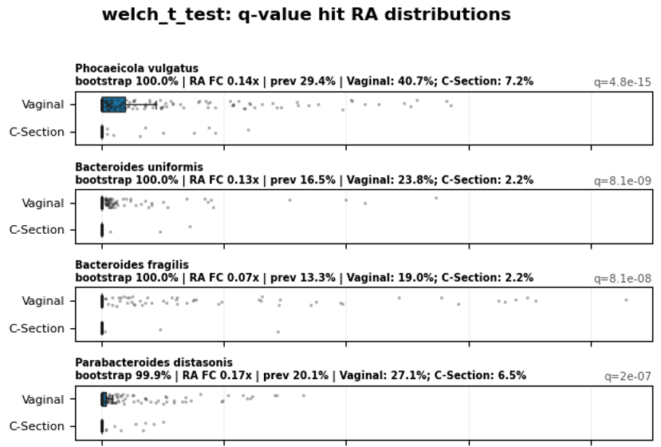

Persephone DA Toolkit
I developed a Python package to help microbiome researchers assess which differences between groups hold up across statistical methods and repeated sampling.
Explore the repository ↗How reliable is a finding?
The toolkit runs multiple differential-abundance methods on the same dataset and compares which taxa each method flags. Bootstrap resampling shows how often those findings recur when the samples change.
A quickstart notebook uses simulated counts to explore method agreement, inspect sparse features, and see how prevalence filtering affects the results.
Explore the quickstart notebook ↗
Inspecting the samples behind a result
Each dot represents a sample. Welch’s t-test flagged these four taxa, but the distributions show how much abundance varies within each birth group. Bootstrap support and prevalence provide context for each finding.
View full-size figure ↗